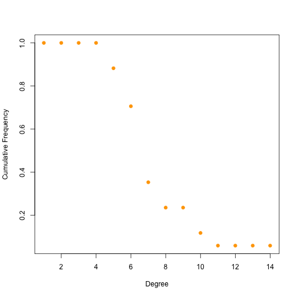
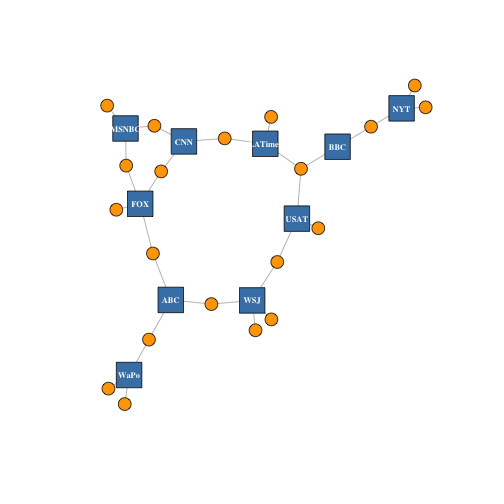
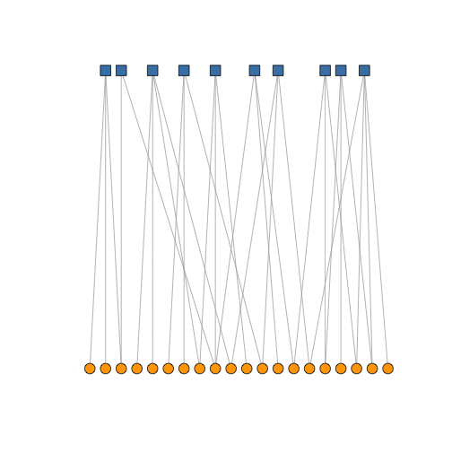
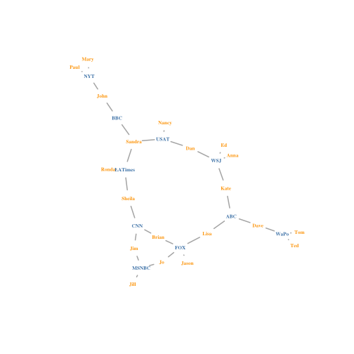

xwMOOC 기계학습
기타 네트워크 데이터 분석
1. tkplot을 활용한 인터랙티브 네트워크 시각화
R과 igraph 팩키지를 활용해서 인터랙티브한 방식으로 네트워크 시각화가 가능하다. 규모가 그렇게 크지 않은 네트워크 시각화에 tkplot을 활용하여 수작업으로 미세 조정을 한 후에 노드를 적절한 좌표에 배치하고 나서 후속작업에 활용하는 작업흐름을 만들어 낸다.
tkid <- tkplot(net)
l <- tkplot.getcoords(tkid)
plot(net, layout=l)
2. 적외선 열지도(Heatmap)
네트워크 데이터를 머리에 털이 난 모양(hairball) 말고, 적외선 열지도(Heatmap)로 표현하는 것도 가능한 방법이다.
netm <- get.adjacency(net, attr="weight", sparse=F)
colnames(netm) <- V(net)$media
rownames(netm) <- V(net)$media
palf <- colorRampPalette(c("gold", "dark orange"))
heatmap(netm[,17:1], Rowv = NA, Colv = NA, col = palf(100),
scale="none", margins=c(10,10) )
3. 연결 분포(Degree Distribution)
네트워크 노드와 엣지링크에 따라 차이가 나지만, 단순한 그래프가 복잡한 네트워크 시각화 산출물보다 더 의미가 있을 때가 있다.
dd <- degree.distribution(net, cumulative=T, mode="all")
plot(dd, pch=19, cex=1, col="orange", xlab="Degree", ylab="Cumulative Frequency")
4. 이분할 그래프(Bipartite Graph)
이분할 그래프(Bipartite Graph) 는 서로 다른 두 객체를 모형화할 때 자주 나타난다. 예를 들어, 뉴스기사를 생산하는 언론사와 이를 소비하는 독자로 나누는 것이 한 사례가 된다. 네트워크 엣지링크는 행렬형태로 표현된다. 행렬형태 데이터를 graph.incidence 함수로 그래프 객체로 불러온다. igraph 팩키지에서 이분할 그래프는 type이 0이면 노드 한집단을 type이 `이면 또다른 집단을 표현한다.
head(nodes2)# A tibble: 6 x 5
id media media.type media.name audience.size
<chr> <chr> <int> <chr> <int>
1 s01 NYT 1 Newspaper 20
2 s02 WaPo 1 Newspaper 25
3 s03 WSJ 1 Newspaper 30
4 s04 USAT 1 Newspaper 32
5 s05 LATimes 1 Newspaper 20
6 s06 CNN 2 TV 56
head(links2) U01 U02 U03 U04 U05 U06 U07 U08 U09 U10 U11 U12 U13 U14 U15 U16 U17
s01 1 1 1 0 0 0 0 0 0 0 0 0 0 0 0 0 0
s02 0 0 0 1 1 0 0 0 0 0 0 0 0 0 0 0 0
s03 0 0 0 0 0 1 1 1 1 0 0 0 0 0 0 0 0
s04 0 0 0 0 0 0 0 0 1 1 1 0 0 0 0 0 0
s05 0 0 0 0 0 0 0 0 0 0 1 1 1 0 0 0 0
s06 0 0 0 0 0 0 0 0 0 0 0 0 1 1 0 0 1
U18 U19 U20
s01 0 0 0
s02 0 0 1
s03 0 0 0
s04 0 0 0
s05 0 0 0
s06 0 0 0
net2 <- graph.incidence(links2)
table(E(net2)$type)< table of extent 0 >
plot(net2, vertex.label=NA)
이분할 그래프도 마찬가지로 네트워크 노드와 엣지링크의 속성을 변경시킬 수 있다. 이번에는 언론사는 정사각형, 독자는 원으로 노드 형태를 바꾼다.
V(net2)$color <- c("steel blue", "orange")[V(net2)$type+1]
V(net2)$shape <- c("square", "circle")[V(net2)$type+1]
V(net2)$label <- ""
V(net2)$label[V(net2)$type==F] <- nodes2$media[V(net2)$type==F]
V(net2)$label.cex=.7
V(net2)$label.font=2
plot(net2, vertex.label.color="white", vertex.size=(2-V(net2)$type)*8) 
layout.bipartite 네트워크 배치가 있어 이를 활용한다.
# layout.bipartite 배치
plot(net2, vertex.label=NA, vertex.size=7, layout=layout.bipartite) 
노드를 텍스트로 표현하는 것이 때로는 도움이 많이 된다.
plot(net2, vertex.shape="none", vertex.label=nodes2$media,
vertex.label.color=V(net2)$color, vertex.label.font=2,
vertex.label.cex=.6, edge.color="gray70", edge.width=2)
노드에 이미지를 넣어 시각적인 이해를 돕는 것도 가능하다. 단, 이 작업을 위해서 png 팩키지가 필요하다.
# install.packages("png")
library(png)
img.1 <- readPNG("~/Dropbox/network/network/03.data/Images/news.png")
img.2 <- readPNG("~/Dropbox/network/network/03.data/Images/user.png")
V(net2)$raster <- list(img.1, img.2)[V(net2)$type+1]
plot(net2, vertex.shape="raster", vertex.label=NA,
vertex.size=16, vertex.size2=16, edge.width=2)
필요하면 어떤 이미지도 네트워크 시각화 산출물에 넣어 표현하는 것도 가능하다.
# l <- layout.auto(net2, ymin=-1.5, ymax=1.5, xmin=-1.5, xmax=1.5)
l <- layout.auto(net2)
plot(net2, vertex.shape="raster", vertex.label=NA,
vertex.size=16, vertex.size2=16, edge.width=2, layout=l)
img.3 <- readPNG("~/Dropbox/network/network/03.data/Images/puppy.png")
rasterImage(img.3, xleft=-1.7, xright=0, ybottom=-1.2, ytop=0)